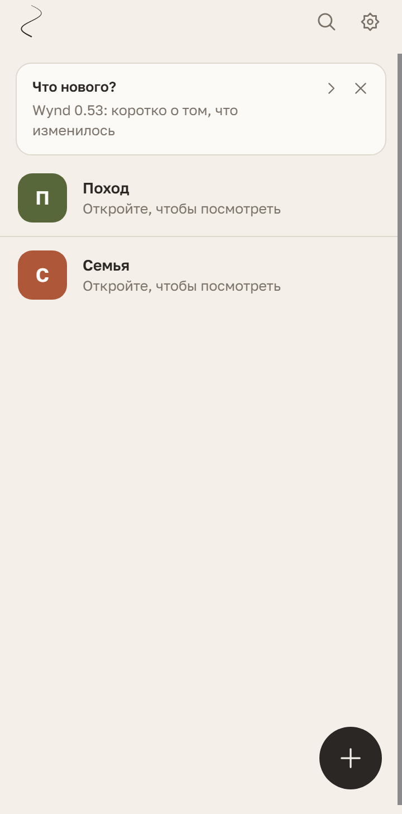
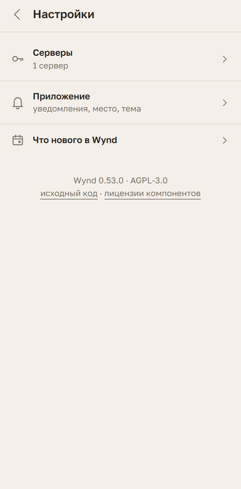
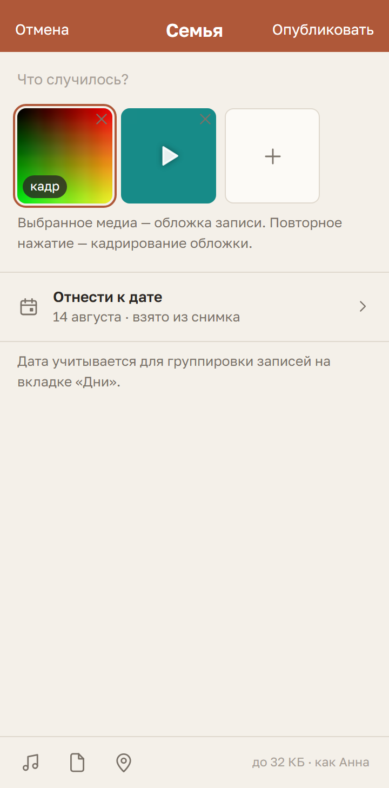
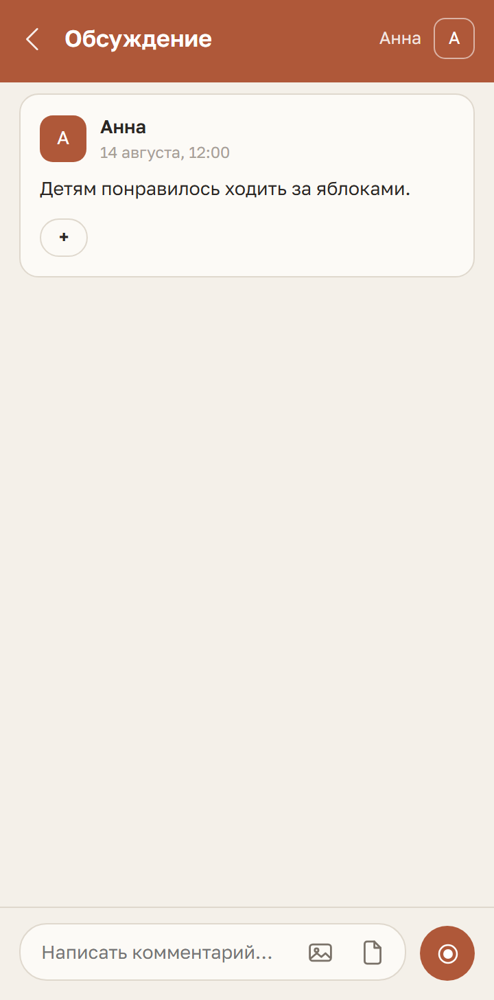
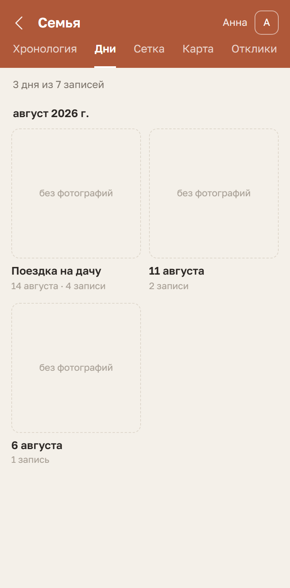

Сейчас · 45,64 px
Сейчас · 52 px

 До изменения · 78,13 px
До изменения · 78,13 px

До изменения · 92,56 pxРазмеры в CSS-пикселях. Кадры сняты при ширине 360 px в светлой теме. Системная строка телефона измеряется отдельно.
| Высота | Состав | Экраны и статус |
|---|---|---|
| 48 px | Одна строка | Улочка уже 48 px. Настройки и новая запись показаны в предпросмотре. |
| ≈60 px | Одна строка | Общий поиск и обсуждение. Действующие размеры. |
| 72 px | 48 + 24, подпись | Альбом с датой. Принято и внесено. |
| 84 px | 48 + 36, вкладки | Круг с вкладками. Принято и внесено. |


Сейчас · 45,64 px
Сейчас · 52 px

До изменения · 78,13 px

До изменения · 92,56 px